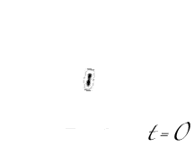

- What types of your own behavior are due to genetic changes, physiological changes, or evolutionary changes (compared to related organisms.
Biological adaptation |
Organisms rarely live in a constant environment. They experience times of feast and times of famine, changing numbers of predators, prey and pathogens, and changing physical and chemical environmental conditions. To put it simply, life is change. To survive, an organism has to be able to maintain itself in response to perturbation (homeostasis) and changing environmental factors (adaptation). This is a constant process, since as the various process of life leads to changes in the environment. Take yourself as an example, when the temperature rises you sweat and you even decide to remove some clothes; when the temperature drops you shiver and get unbundled up - both the these are adaptive responses. One type is physiological (sweating and shivering) – such responses are generally unconscious, you do not decide to shiver, your body does. The other is behavioral (putting on and taking off clothing) and requires conscious thought. There are also slower types of adaptation, such as the ability to grow thick and more insulating fur for the winter, and the shedding of fur in preparation for the summer. Very rapid (seconds) adaptive responses depend primarily upon changes in the activity of proteins, somewhat slower responses (minutes to hours, days, and months) begin with changes in protein activity, but then involve changes in gene expression. The types of adaptation an organism can perform are the result of evolution. |
Bacteria and the study of adaptation: Bacteria are single celled organisms that are a good system in which to study both physiological and evolutionary adaptation because they can, under the right conditions, grow very rapidly and inexpensively. Moreover, it is possible to freeze bacteria and then revive them - we can think of them as "frozen fossils". It is therefore possible to generate thousands of generations of bacteria. This is the approach taken, most impressively by Richard Lenski and others. |
 |
|
|
|
Use Wikipedia |
19 March 2005 revised
21-Mar-2013
|